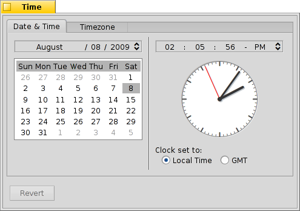

Português (Brazil)
Português (Brazil) Català
Català Deutsch
Deutsch English
English Español
Español Français
Français Italiano
Italiano Magyar
Magyar Polski
Polski Português
Português Română
Română Slovenčina
Slovenčina Suomi
Suomi Svenska
Svenska 中文 ［中文］
中文 ［中文］ Русский
Русский Українська
Українська 日本語
日本語 Hora
Hora
| Deskbar: | ||
| Localização: | /boot/system/preferences/Time | |
| Definições: | ~/config/settings/networktime settings - All the settings concerning synchronizing the time through the network ~/config/settings/RTC_time_settings - The setting of the hardware clock (local or GMT) ~/config/settings/Time settings - The time zone setting ~/config/settings/Time_preflet_window - The panel's window position etc. |
The panel of the Time preferences is split into four tabs:
 Date and time
Date and time

No lado esquerdo, podemos definir o dia do mês simplesmente clicando nele no calendário. Mude o mês e o ano clicando nele e usando as setas para baixo / para cima à direita ou as teclas de cursor no teclado.
Similarly, you set the time at the right. Or simply move the hands of the clock directly.
Time zone

Simply find and choose your country in the list of continents and press . For countries with more than one time zone you'll have to expand one level deeper.
To the right you'll find the time of the currently set time zone and the preview time of the the zone you've chosen.
Also on the right side is a setting for the hardware clock of your computer. There are two modes for the clock:
| to display your local time, which you normally want if you dual-boot into Windows. | ||
| to display Greenwich Mean Time, which is the UNIX compatible setting. |
Network time
Setting date and time manually is pretty much obsolete if you're connected to the internet. There are public servers that supply very exact time signals.

With the / buttons you can add/remove NTP-servers to/from the list.
The checkboxes below tell the system to when synchronizing, not only the currently selected one, and to , so you can be sure you're clock always shows the correct time.
You can if you accidentally deleted working NTP-servers and your clock manually.
Clock

The last tab shows the options of the clock displayed in the Deskbar. You can disable the clock there completely with the top checkbox. The rest are equally self-explanatory.
In every tab is a button that brings back the settings that were active when you started the Time preferences.